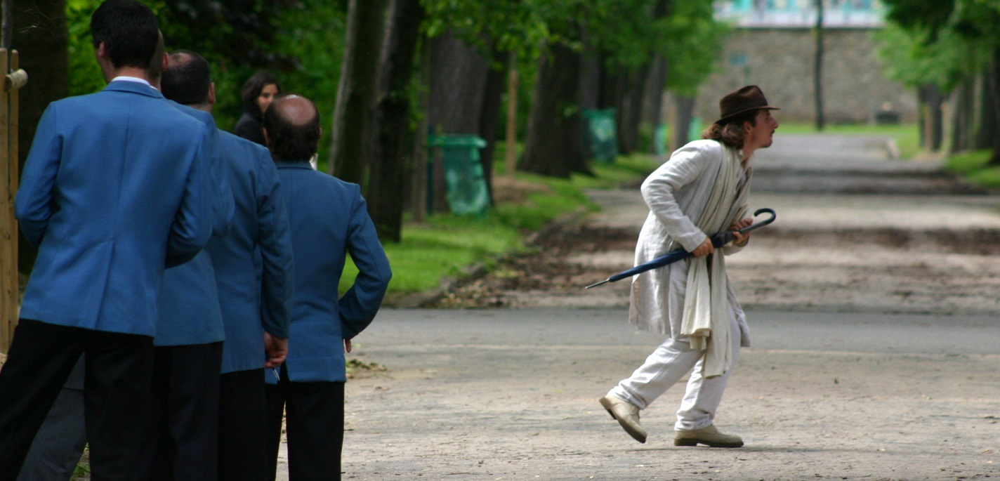

Origin Bound, New Century Film, David Li, (LM) : Rôle du médecin
Pleine Lune, Juliette Marrécau, (CM) : Rôle principal
A un fil, Lucile Chrétien, (CM) : rôle de l’Ange-mime Marceau
Le Voyage de Théophile, (documentaire) 1er Rôle : T. Gautier jeune, réal. Serge Bourguignon
Marie-Antoinette, personnage du précieux, réalisé par Sofia Coppola.

Mise en scène
Spectacle conte itinérant à cheval à travers la France, Sêmênankh au pays des couleurs de l’arc en ciel, de Sylvie Curioz. Tournée nationale (Ecoles, Hôpitaux, maisons de quartier, châteaux, Mairies, Maison de l’Europe... Vernissage et inaugurations).
Création de spectacles pour enfants et adolescents/ adultes dans le cadre de l’association ASEFEC et spectacle équestre pour l’association Chevotissimo
Ecriture
Aboutit : 3 Fleurs de Lotus
En cours : Udumbara, la fleur des sages
Cavalier de dressage haut niveau national
Qualifié pour l’Académie du spectacle équestre du Château de Versailles, Ecuyer au sein du spectacle équestre Zingaro, Ecuries de Bartabas.
2010-2013 : Diplômé en Abhidhamma et Langue Pali à l’Université Internationale de Birmanie.
Conférences/Mémoire sur l’Ecologie : « Le Dhamma….Profonde écologie ».
En Partenariat avec l’ambassade Française et l’Institut Culturelle Française à Rangoon
Entraide humanitaire à la population Birmane et application directe
Médiateur et relation publique du festival Flor’Art et du festival « Faites de la Paix ».
2012-2013 : Membre du mouvement organisateur WWEE (World Wide Ethical Experts).
New Century Film
https://www.dropbox.com/s/v6k60om4nayzcnw/06-%E6%B3%95%E8%AA%9E-%E5%8A%9F%E6%B3%95%E4%BB%8B%E7%BB%8D.mov?dl=0
et autres courts documentaires…
Média international, news
Films
Le Vœu : New Century Film, David Li, (LM) : voix française de l’Acteur Principal Lettre
Conte :
La Fleur des Sages, adaptation
Purgatoire, Film Audio, Rôle de l’Ange/ Avocat Raphël, Yannick VanGoethem
Contes et chemins d’éveil, de Jérôme Marcoux, Ed. Bénévent pour l’association « Terre, Mémoire vive » et « Pour la Vie Ailleurs et Pour la Vie Maintenant ».


{kind=link}
{kind=link}
{kind=link}
{kind=link}
{kind=link}
{kind=link}
{kind=link}
{kind=link}
{kind=link}